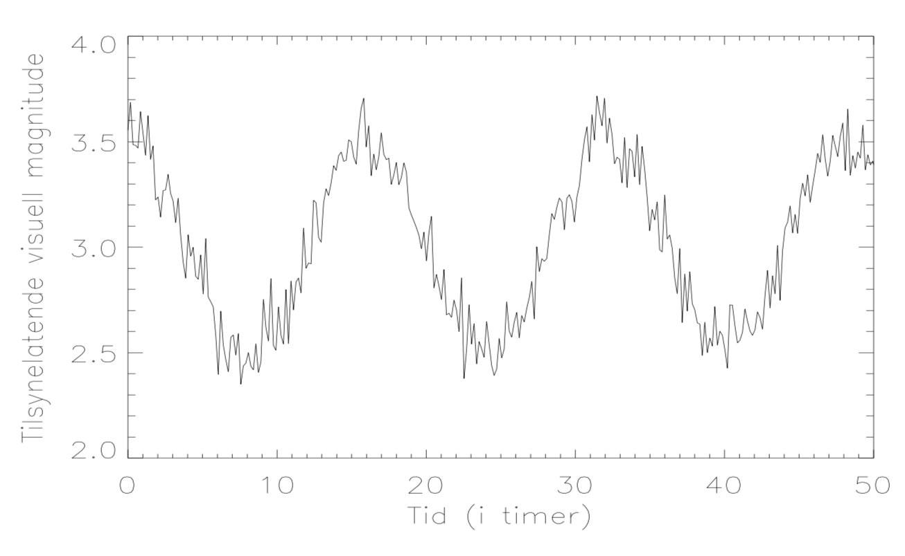

Du må bruke presentasjonsmodus/fullskjermsvisning for å lese denne, men du skal ikke bruke frem/tilbake-knappene, KUN knappene som dukker opp på sliden for å ta deg videre! Ofte må du laste filen ned til maskinen din og åpne den der for å få til dette. Merk at noen knapper vil åpne nettskjema, videoer eller andre ressurser i internettbrowseren din. Når du gjør det riktig, skal du kun se en side av gangen, og når du trykker på knappene som dukker opp på skjermen så skal disse ta deg frem/tilbake i dokumentet. Du vil miste mye læringsutbytte hvis du ser flere slides av gangen. Får du det ikke til, spør foreleser/gruppelærer!
Dette er en erstatning for forelesningen i emnet. Har du gått skikkelig gjennom disse interaktive forelesningsnotatene så trenger du ikke å lese de fulle forelesningsnotatene (med unntak av oppgavene bak). All informasjonen du trenger, får du her. Du kommer til å få mange grublespørsmål og diskusjonsoppgaver, det er meningen at disse skal gjøres i grupper av minst 2, maks 4 studenter. Det er defor sterkt anbefalt at dere sitter sammen i grupper når dere går gjennom disse interaktive forelesningsnotatene, du vil få betydelig mer utbytte av dem på den måten. En god ide kan være å bli enige om å treffes til den faste forelesningstiden og bruke forelesningslokalet som kommer til å være resevert til dette. Hvis du har kommentarer ris/ros til disse forelesningsnotatene eller til emnet, trykk på 🙂 🙁 knappen som du finner på alle sider.
Forrige side Velkommen til del 3A! I denne delen av kurset skal vi se hvordan vi kan finne avstander til objekter i verdensrommet. Det finnes mange forskjellige metoder, noen egner seg for det nære verdensrom, andre kun for veldig fjerne objekter. Ofte bygger de på hverandre slik at metodene for fjernere objekter må kalibereres med metodene for nære objekter, og slik må man gå steg for steg med metode for metode lenger og lenger utover i universet. Derfor kalles spektret av metoder for avstandsmålinger for den kosmiske avstandsstigen.(illustrasjon: Credit: ESA/Hubble & NASA, RELICS; Acknowledgement: D. Coe et al. + Hiclipart)Neste side
Forrige side🙂 🙁Introduksjon Ble du skremt av antall sider her? Ta det rolig, de fleste av disse sidene er store bilder/figurer, tilsammen med 3B (som er veldig kort) tilsvarer dette 2 forelesninger.
Vi begynner som vanlig... ...med litt brainstorming. Som det er svært viktig at du gjør før du går videre.
Forrige side🙂 🙁parallakse Du kikker utover et fjell-landskap. I det fjerne kan du se fjell, men plutselig ser du en rev rett foran deg! Hvis du nå lukker det høyre øyet ditt, tror du at dette kommer til å se forskjellige ut på noen måte? Hva tror du endrer seg?MERK: siden dette er en 2D-skjerm vil du ikke se effekten her, du må tenkte deg hva som ville skjedd hvis du virkelig stod der ute på fjellet!Tenk deg godt om før du blar om!
Forrige side🙂 🙁parallakse Ser du forskjellen? Bla gjerne litt frem og tilbake mellom denne og forrige side for å se om du ser forskjellen! Hva skjedde? Hvorfor ble det slik?Tenk deg godt om før du blar om!
Forrige side🙂 🙁parallakse Hvis du nå har en teori, la oss se om du tar denne testen først: Her ser vi situasjonen med begge øyne igjen. Hvis du nå isteden lukker det venstre øyet ditt, hva tror du da skjer? Hi, hi, tenker du nok, det er jo opplagt, men nå blir du lurt, så sjekk tegningen din fra forrige side skikkelig før dublar om.
Forrige side🙂 🙁parallakse Ok da, du ble ikke lurt (dvs. du ble lurt til å tro at du ble lurt...). Reven ser du plutselig nå til venstre. Men hva er det som skjer?Tenk deg godt om før du blar om!
Ja, hvis du ikke ser det, så skal jeg holde deg på pinebenken litt til. Nå skal du få en praktisk øvelse: hold tommelen opp foran ansiktet ditt (omtrent i midten). Se på tommelen med begge øyne. Lukk det ene øyet og se hvor tommelen er i forhold til et eller annet langt borte i bakgrunnen. Så lukker du isteden det andre øyet og ser hvor tommelen er i forhold til den samme tingen. Flytter den seg på samme måte som reven? Hvorfor?Tenk deg godt om før du blar om!
Forrige side🙂 🙁parallakse
Her ser du situasjonen ovenfra. Merk at siden fjellene er veldig langt borte så vil linjene fra hver av øynene til fjellene være nesten paralelle (har du lagt merke til at hvis du kjører bil og har månen rett over deg, så vil månen enda være rett over deg etter at du har kjørt en god stund. Linja fra deg til månen er rett opp i begge tilfeller). Ser du at fra det ene øyet er reven en vinkel p til venstre for fjellet, fra det andre øyet er reven en vinkel p til høyre?Ja, ser det nå!
Forrige side🙂 🙁parallakse Ser du at reven har flyttet seg en vinkel 2p fra det ene øyet til det andre? Hvis du peker på reven i det ene tilfellet og så flytter armen til å peke på reven i det andre tilfellet, vil du ha beveget armen en vinkel 2p. Vi kaller pparallaksevinkelen. Men stopp en hal, er vinkelen p her den samme som på forrige figur??Tjaaaaa
Forrige side🙂 🙁parallakse Ser du det?? Hvis ikke, spør! Men hva tror du vinkelen p avhenger av? Hvordan kunne du fått denne vinkelen til å bli større eller mindre? Kansje du kan prøve deg frem med tommelen og se om du ser det? Neste side
Forrige side🙂 🙁parallakse
Her er B avstand fra nese til øye, vi kaller det baseline på engelsk, og d er avstanden til reven. Kan du finne en sammenheng mellom disse 3 størrelsene? Hint: du kan anta at parallaksevinkelen er liten, det er den nesten alltid i sammenhenger der parallakse brukes. Jeg har kommet frem til en formel, eller ihvertfall prøvd hardt!
Forrige side🙂 🙁parallakse
Husker du liten-vinkel-formelen? Den bør du kunne utlede selv uten hjelp. Hvis du ikke allerede har et svar, prøv igjen nå med liten-vinkel-formel... Nå ser jeg det!
Forrige side🙂 🙁parallakse
Liten-vinkel-formel gir: B = dp (hvor p må være i radianer)Hvis vi sier at avstanden mellom nese og øye er 10cm, og du ser en endring i revens posisjon på 0.1 grad fra et øye til det andre, hvor langt unna er revet?Jeg har et svar!
Det ble galt! Ble du kanskje lurte av en faktor 2 her? Husk at B er avstanden fra nese til øye, 2B er avstand fra øye til øye. Og parallaksevinkelen p er definert som vinkelen fra to øyer (altså midten) til et øye mens 2p er vinkelen fra øye til øye! Ser du det på figuren? Dette er en veldig typisk feil på eksamen, veldig bra at du gjorde den her og ikke på eksamen. Nå gjør du ikke denne feilen igjen!
Helt riktig! Her er det fort gjort å trå feil: Husk at B er avstanden fra nese til øye, 2B er avstand fra øye til øye. Og parallaksevinkelen p er definert som vinkelen fra to øyer (altså midten) til et øye mens 2p er vinkelen fra øye til øye! Ser du det på figuren? Dette er en veldig typisk feil på eksamen, pass på at du alltid tegner figur og er klar over hva definisjonene av baseline B og parallaksevinkel p er. Neste side
Forrige side🙂 🙁parallakse
Vi ser at parallaksemålinger kan brukes til å bestemme avstander! Nettopp det vi trengte! Men hvordan kan vi nå bruke dette i astrofysisk sammenheng? Tenk deg at du har en stjerne i Melkeveien, og så ser du den i forhold til en fjern, fjern galakse! Hvis du nå tar bilde med to teleksoper som har en stor avstand fra hverandre, så vil du vel få samme effekt som med reven?MEN, hvis parallaksevinkelen p er liten, mindre enn oppløsningsevnen til teleskopet, ja da vil du vel ikke kunne se stjernas “bevegelse” i forhold til den fjerne galaksen? Hvis du husker fra diskusjonen om ekstrasolare planeter, så vil en parallaksevinkel som er mindre en oppløsningsvinkelen til teleskopet bety at stjerna da vil se ut til å være på samme plass på bildet og vi kan ikke måle parallaksevinkel!. For at vi skal kunne bruke parallakse for å måle avstander til astronomiske objekter, må vi derfor sørge for en stor parallaksevinkel p. Men hvordan kan vi få til det?? La oss se på formelen igjen: B = dp (hvor p må være i radianer)Hvordan kan du sørge for at parallaksevinkelen er stor når du skal måle avstanden til f.eks. en stjerne?Jeg har et svar!
La oss først se på et eksempel. Ovenfor ser du et bilde tatt av et teleskop med en fjern galakse i bakgrunnen og en “nær” stjerne nederst til venstre. Hvis nå et annet teleskop som står et annet sted tar et bilde i samme retning, hvordan vil det set ut?Jeg vet det! Bilde: NASA/JPL-Caltech/ESA/Harvard-Smithsonian CfA
Nettopp ja! Her ser du bildene fra begge teleskopene! Ser du hvordan stjerna står på et annet sted i forhold til den fjerne galaksen, på samme måte som reven?. Men hvis parallaksevinkelen p hadde vært mye mindre så ville ikke stjerna flyttet på seg like mye, og kanskje ville den tilsynelatende (innenfor oppløsningsevnen til teleskopet) stått på samme sted. Derfor er det viktig å få denne vinkel (forflytningen) stor nok. Så da spør jeg en gang til, hva kan man gjøre for å få størst mulig p for et objekt slik at parallakseeffekten blir synlig? B = dp (hvor p må være i radianer)Jeg har et svar!
Forrige side🙂 🙁parallakse Hvis vi skriver om formelen $$p=\frac{B}{d}$$ ser vi at stor B eller liten d vil gjør parallaksevinkelen p stor. Det med liten avstand d er ikke noe vi kan bestemme, det er jo bare så langt unna objektet er. Hvis objektet er langt unna, vil vi ikke få en parallaksevinkel stor nok til at parallakseeffekten kan observeres. Dermed ser vi at parallaksemålinger har en sterk begrensning: den kan kun brukes på objekter som er nærme (vi skal snart se hvor nærme). Derfor er denne metoden det første steget på avstandsstigen. Vi må altså akseptere avstanden som det den er. Det eneste vi dermed kan endre på er baseline B. Husk at avstanden mellom øynene/teleskopene er 2B. Vi må altså ha teleskopene så langt fra hverandre som bare mulig. La oss gjøre overslagsregning her: Jordas radius er ca.6000km. Hvis vi antar at vi har et teleskop på hver kant av jorda slik at avstanden mellom disse er 12000km, og vi hadde en begrensing på oppløsningsevnen til atmosfæren på ca. 0.4”, hva er da avstanden til den fjerneste stjernen som vi kan måle en parallakseeffekt på? Altså hvor langt ut i universet kan vi se effekten av parallakse, og dermed måle avstanden med denne metoden, hvis vi maks klarer å se en “forflytning” av stjerna mellom de to bildene som er større enn 0.4”? Gi svaret i lysårJeg har et svar!
Forrige side🙂 🙁parallakse
Fikk du omkring 0.0003 lysår?? $$d=\frac{B}{p}=\frac{12000\,\mathrm{km}}{\frac{0.4}{3600}\frac{\pi}{180}}=\frac{6187944187412\mathrm{m}}{3\times10^8\,\mathrm{m/s}\times365\times24\times3600\,\mathrm{s}}\mathrm{ly}=0.00065\,\mathrm{ly}$$ Den nærmeste stjerna til sola er omkring 4 lysår unna, men med parallakse kan vi altså kun måle avstander som er mye mindre enn dette! En fullstendig ubruklig metode altså?ELLER... når jeg tenker meg om så finnes det en måte å få teleskopene enda lenger fra hverandre på! Faktisk så mye lenger fra hverandre at vi kan måle parallakse til de nærmeste stjernene! Og det uten å sende noe som helst ut i verdensrommet! Nå fikk du litt å gruble på her... Hvis du ikke ser det, ta deg en 10 min. spasertur, eller gå og lag deg en te, og tenk. Hvilket triks kan vi gjøre her? Jeg har tenkt meg godt om...
GENIALT! Hvis vi tar bildet med 6 måneders mellomrom, så få vi en baseline på 1AU!Hvis vi gjør regninga vår på nytt med en baseline på 1AU så ser vi at vi kan måle avstander til stjerner i en avstand i omkring 10 lysår. I virkeligheten er ikke vinkelen 0.4” absolutt her, man kan skille vinkler mindre enn dette med god bildebehandling og dataanalyse slik at man kan bruke dette med avstander på flere titalls lysår. Med romobservatoriet Gaia (skutt opp i 2013) som er utenfor atmosfæren og i tillegg bruker teknikker som ved å observere objektene mange, mange ganger gjør at man nå kan måle parallakseeffekter så små at vi kan bruke parallakse til å måle avstander til objekter i hele Melkeveien.Neste side
Her ser vi stjerna med galaksen i bakgrunnen igjen, der bildene nå er lagt over hverandre slik at vi ser stjerna i begge posisjoner. Dette bildet er tatt med det samme teleskopet med 6 måneders mellomrom. Vinkelavstanden mellom de to stjernene på det sammensatte bildet her er 0.1”. Hvor langt unna er stjerna? ca. 32 lyca. 65 lyca. 130 lyca. 260 lyca. 520 ly
Har du glemt en faktor 2 et eller annet sted??? Eller hvordan var det med omregning fra buesekunder til grader til radianer? Eller omregning til lysår?
Forrige side🙂 🙁parallakse
Det er helt riktig! Da fikk du faktorene 2 rett! Og du fikk regnet riktig om til radianer. Gratulerer du har tatt det første steget ut i verdensrommet. Neste side
Forrige side🙂 🙁parallakse
Da er du klar for å se hvor definisjonen av parsec kommer fra. Smak litt på ordet...par og sec. Hva med parallakse per buesekund. Nettopp! Hvis en stjerne har en parallakse på et buesekund, så er avstanden til stjernen en parsec!. Og da går vi utifra en baseline B=1AU. La oss se: $$d=\frac{B}{p}=\frac{1AU}{p}=\frac{1AU}{p''\frac{1}{3600}\frac{\pi}{180}}=\frac{206265}{p''}AU$$ der p″ er parallaksevinkelen målt i buesekunder. Hva blir da avstanden til en stjerne med parallakse på 0.1”? Jeg tror jeg vet det!
Forrige side🙂 🙁hovedserietilpasning Hovedserietilpasning???? La oss dele opp ordet:Hovedserie-tilpasning. Dette med tilpasning kan man kanskje få noe ut av men for å forstå hva hovedserien er, så trenger vi å bruke Hertzspring-Russel-diagrammet! Hvafforno’???
Forrige side🙂 🙁hovedserietilpasning Hertzsprung-Russel-diagrammet???? Jepp, tida har kommet til å introdusere dere til et av de viktigste redskaper for å studere stjerners liv og virke. Men for å forstå hva et Hertzsprung-Russel-diagram, eller bare HR-diagram, er så trenger du å vite hva en sjernehop er, eller rettere sagt hva en åpen hop og en kulehop er. Hvafforno’???
Forrige side🙂 🙁hovedserietilpasning
En stjernehop er en samling av noen hundre eller noen tusen stjerner som alle ble født omtrent samtidig av den samme gass-skya. En stor kuleformet gassky med masse på flere tusen solmasser kollapset under sin egen gravitasjon og ble fragmentert i mindre kuleformede skyer som dannet stjerner. Stjernehoper kan deles inn i to grupper:
Kulehoper (“globular clusters” på engelsk): Disse går i bane rundt en galakse, ofte langt fra galaksens sentrum og ofte har de baner utenfor galakseplanet. De har beholdt sin opprinnlige kuleform og er derfor en kuleformet ansamling av stjerner, derav navnet.
Åpne hoper ble dannet i galakseskiven og har med tiden blitt “revet i stykker” av gravitasjonskrefter fra nærliggende objekter eller tidevannskrefter fra galaksens sentrum. Disse har dermed ikke lenger kuleform, men har blitt “åpnet opp” og fått en irregular form.
Her ser vi en åpen hop, kalt NGC265. Denne åpne hopen ligger faktisk ikke i Melkeveien men i en liten satelitt-galakse til Melkeveien (en galakse som går i bane rundt Melkeveien som en “måne”) som heter SMC (Small Magellanic Clound, lille Magellanske sky). Du kjenner kanskje til en annen slik åpen hop allerede: Pleiadene eller “de syv søstre” er en åpen hop der de sterkeste stjernene er godt synlig uten teleskop.Neste side Bilde: HST/NASA/ESA
Her ser vi en kulehop NGC362. Det er omkring 150 kjente av disse som går i bane rundt Melkeveien. De er et flott skue også i et lite amatørteleskop.Neste side Bilde: ESA/Hubble& NASA
Forrige side🙂 🙁hovedserietilpasning
Siden stjernene i slike hoper er født omtrent samtidig, blir de brukt til å studere stjerners livsløp da du som regel vil finne stjerner med alle mulige forskjellige aldre. Et viktig redskap for å studere en slik hop er HR-diagrammet. Her ser du et slikt:
På x-aksen har vi altså sjernas overflatetemperatur, økende mot venstre. På y-aksen har vi stjernas luminositet eller absolutt størrelseklasse. For å lage et slikt diagram for en stjernehop, må du altså finne temperaturen og luminositeten til alle stjernene og plotte de inn her. Neste side
Når du gjør dette for en stjernehop vil du få et HR-diagram som det du ser her. De aller fleste stjernene ligger langs et bånd som går fra øverst til venstre (høy T og L) til nederst til høyre (lav T og L). Dette båndet kalles hovedserien (engelsk: main sequence) og består av stjerner som enda fusjonerer hydrogen i kjernen (dette kommer vi tilbake til). Når stjernene blir eldre eser de ut og blir kjempestjerner (markert øverst til høyre i diagrammet, lav T og høy L). Til slutt vil stjerner med lav masse dø og bli til hvite dverger (nederst til venstre, høy T, lav L). Det vi skal interessere oss for i del 3A er hovedserien. Neste side
Men hvordan har man fått laget dette diagrammet? Overflatetemperaturen er vel ikke så vanskelig, her kan man f.eks. bruke Wiens forskyvningslov (husker du?) Men hva med luminositeten??. Vel, luminositet og absolutt størrelseklasse var jo bare to forskjellige enheter å måle samme fysiske størrelse med, kjenner du en kan du regne ut den andre. Vi hadde en sammenheng: $$m-M=5\log{\frac{r}{10\mathrm{pc}}}$$ Altså: kjenner du tilsynelatende størrelseklasse m (det gjør du alltid så lenge du kan observere objektet) og avstand r, kan du finne absolutt størrelseklasse M og dermed luminositeten. Neste side
Stjernene i hopen ligger veldig tett sammen. Avstanden mellom stjernene er forsvinnende liten i forhold til avstanden fra oss til hopen. Kjenner vi avstanden til hopen, så er det en god antakelse å si at alle stjernene i hopen har samme avstand r fra oss. Hvis vi da f.eks. måler avstanden til hopen med parallaksemetoden, så har vi alt vi trenger for å lage oss et slikt diagram! Har du nå klart for deg hvordan du kunne gå frem for å lage et slikt diagram? Hvis ikke, gå gjennom de forrige sidene en gang til og spør hvis noe er uklart. Jeg forstår og er klar for neste side
De fysiske prosessene som danner stjerner er alltid de samme, og vil være den samme for alle hoper. Fordelingen av stjerner i HR-diagrammet forventer vi derfor vil være ganske lik mellom hopene. Dette er bekreftet av observasjoner av mange forskjellige hoper. Vi får alltid et HR-diagram, og da spesielt en hovedserie, som er akkurat slik som på denne figuren med samme forhold mellom L og T for hovedseriestjernene. Neste side
Hva nå med vår åpne hop NGC265 som ligger i den Store Magellanske Sky? Den ligger for langt unna til at vi kan måle avstanden med parallakse! Vi kan altså kun måle tilsyndelatende størrelseklassem og ikke absolutt størrelseklasseM for stjernene i denne hopen. Overflatetemperaturen kan vi enda måle, da vi kun trenger spektret fra stjernen for å måle den.Neste side
Dermed kunne vi jo forsøke å lage oss et HR-diagram som det over, men med m istedenfor M på y-aksen. Da vil vi ikke lenger ha luminositet på y-aksen. Men hvordan vil dette HR-diagrammet se ut? Hva vil være forskjellen med det vanlige HR-diagrammet som har absolutt størrelseklasse og dermed M på y-aksen? Tenk det godt om før du blar om!
Forrige side🙂 🙁hovedserietilpasning Her bør du faktisk stoppe opp og tenke litt! Gi deg noen minutter til å tenke godt gjennom problemstillingen: hvordan tror du dette diagrammet blir seende ut? Du har all kunnskap du trenger for å vite det!Tenk det godt om før du blar om!
Forrige side🙂 🙁hovedserietilpasning
La oss skrive om formelen: $$m=M+5\log{\frac{r}{10\mathrm{pc}}}$$ Ser du at hvis vi nå plotter m på y-aksen isteden for M, så blir m-verdien det samme som M-verdien pluss en konstant som er omtrent den samme for alle stjernene i hopen?. Husk at den innbyrdes avstanden mellom stjernene i hopen er forsvinnene liten i forhold til avstanden r til hopen slik at vi i praksis kan si at alle stjernene i hopen er i avstand r. Da blir det siste leddet konstant. Bør vi ikke da se et helt identisk HR-diagram, bare at alle stjernene er skiftet oppover eller nedover med en konstant verdi?Tenk det godt om før du blar om!
Forrige side🙂 🙁hovedserietilpasning Får vi ikke da noe slik som dette?
(ikke bry deg om teksten på x-aksen for nå, “spektralklasse” er omtrent det samme som temperaturen til stjernene.). Her har vi kun tegnet inn hovedserien for å gjøre det lettere å se. Diagrammet til venstre er tatt fra stjernehoper med kjent avstand og dermed kjent absolutt størrelseklasse M. Dette diagrammet har M på y-aksen. Diagrammet til høyre derimot er tatt fra en stjernehop med ukjent avstand, og dermed ukjent absolutt størrelseklasse. Der har vi kun tilsynelatende størrelseklasse m på y-aksen. Men vi vet at dette bare er skøvet opp eller ned med et konstant tall. Kan du bruke disse to diagrammene samt formelen på forrige side til å finne avstanden til stjernehopen i diagrammet til høyre? Tenk det godt om før du blar om!
Det ble nok galt! Vi vet at de absolutte størrelseklassene i en stjernehop er fordelt som på figuren til venstre. Er den tilsynelatende størrelseklassen for stjernene i hopen til høyre større eller mindre enn den absolutte? Og betyr større eller mindre tilsyndelatende størrelseklasse at stjernene er lettere eller vanskeligere å se på himmelen?Jeg har tenkt meg litt om nå...
Flott! Stemmer!Er du enig i at figuren til venstre viser fordelingen av absolutte størrelseklasser for en (hvilken som helst) stjernehop? (hvis ikke, bla tilbake og les på nytt). Hvis du går tilbake til 1D og definisjonen av absolutt størrelseklasse så var det den tilsynelatende størrelseklassen som en stjerne ville hatt hvis den ble flyttet til en avstand av 10 pc.OK! Skjønner!
La oss velge ut en gitt temperatur, f.eks. den markert med A på x-aksen. Hvis vi ser på stjernene med denne temperaturen for hopen vår på figuren til høyre så ser vi at stjerner med denne temperaturen har en tilsynelatende størrelseklasse på omkring 4, enig? Samtidig ser vi på diagrammet til venstre at stjerner med denne temperaturen skal ha en absolutt størrelseklasse på ca.2? Dvs. stjerner i denne hopen med størrelseklasse 4 får størrelseklasse 2 (altså blir sterkere!) hvis de flyttes til 10 pc. Det må vel bety at de er lenger unna enn 10 pc?Ja, det er jammen sant!
Tilbake til hovedspørsmålet: Kan du bruke disse to diagrammene samt formelen $$m-M=5\log{\frac{r}{10\mathrm{pc}}}$$ til å finne avstanden til stjernehopen i diagrammet til høyre? Er den ... 8pc10pc12pc25pc50pc100pc
Forrige side🙂 🙁hovedserietilpasning Det ble nok galt! Hvorfor tar du ikke utgangspunkt i stjernene med temperatur A slik som vi gjorde på de forrige sidene? Vi vet jo at diagrammet har blitt skiftet opp/ned med en konstant størrelse (gå tilbake igjen hvis du er usikker på hvorfor), så da skulle vi få samme resultat uansett hvilken temperatur vi ser på. Da har du m og M...
Forrige side🙂 🙁hovedserietilpasning
Det er helt riktig! Hvis vi ser på f.eks. temperaturen A så ser vi at diagrammet har blitt skiftet opp med m − M = 2. Siden avstanden r er omtrent den samme for alle stjerner så er jo dette skiftet fra m til M en konstant størrelse for alle stjernene i hopen (og dermed for alle temperaturer): $$m-M=5\log{\frac{r}{10\mathrm{pc}}}$$ Prøv gjerne med en annen temperatur og du vil enda finne m − M = 2. Det vi har gjort er å tilpasse hovedserien fra HR-diagrammet med m på y-aksen til hovedserien i HR-diagrammet med M på y-aksen. Vi finner at hvis vi flytter hovedserien i HR-diagrammet for hopen med ukjent avstand med m − M = 2 så vil de to diagrammene ligge nøyaktig på hverandre. Når vi har funnet det konstante skiftet m − M, så kan vi bare putte inn i formelen og finne avstanden. Neste side
Forrige side🙂 🙁hovedserietilpasning
Du har altså gjort en hovedserietilpasning for å finne avstanden til stjernehopen. Prinsippet er jo at du kjenner hvordan fordelingene av luminositeter (absolutte størrelseklasser) som funksjon av temperatur (HR-diagram) skal være for en slik hop. Og så ser du på fordelingen av mottatt fluks som funksjon av temperatur for stjernene i en hop med ukjent avstand. Siden du vet hvilke luminositeter disse stjernene egentlig har, så justerer du avstanden helt til du finner en avstand som gir det den målte mottatte fluksen gitt at du kjenner luminositeten. Dette var en annen måte å forklare hovedserietilpasning på. Har du lagt merke til at dette virkelig er en avstandsstige: vi måtte først ta det første steget og finne avstander til hoper med hjelp av parallakse. Kun etter at vi hadde avstanden til noen hoper, kunne vi lage HR-diagrammet med M på y-aksen. Og med denne kunne vi nå finne avstanden til hoper så langt unna at parallakse ikke funker. Hvis du forstod hvordan hovedserietilpasning funker og prinsippet bak, gå videre til neste side. Hvis ikke, ta en kikk på denne videoen her . Neste side
Tilbake til vår åpne hop NGC265 som ligger i den Store Magellanske Sky. Når vi gjør hovedserietilpasning til denne åpne hopa, så finner vi jo faktisk også ut omtrent hvor langt unna den Store Magellanske Sky ligger! Men hovedserietilpasning har begrenset rekkevidde. Vi klarer ikke å se enkeltstjerner i galaksehoper i galakser utenfor vårt eget nabolag av satelittgalakser. Dermed trenger vi andre metoder for å finne avstander til andre galakser.Neste side
Før vi begir oss ut på de mer svimlende avstandene, trenger vi litt kaffe. Det konseptuelt vanskligste i denne delen er over, resten er litt greiere. Ihvertfall 15 min pause... Klar for steget ut av vår galakse?
Forrige sideVi tar det tredje steget på avstandsstigen:
Nytt tema:
avstandsindikatorer
Omtrent hit (normalt 5-6 sider til) kommer jeg etter en dobbelttime fysisk forelesning. Du bør vurdere om du også vil vente med resten til imorgen? Eller er du frisk og opplagt og klar til resten allerede?La oss klatre videre!
For å kunne måle avstander lenger utover i universet, trenger vi en av de aller viktigste metodene for avstandsmålinger: avstandsindikatorer. Avstandsindikatorer er objekter som på en eller annen måte avslører egenskaper ved seg selv som gjør at de kan brukes til avstandsmålinger. Det er to typer:
Standard-lyskilder er objekter som på en eller annen måte avslører hvilken luminositet (og dermed hvilken absolutt størrelseklasse) de har. Hvis vi dermed kjenner absolutt størrelseklasse M, og så lenge vi kan observere objektet så vet vi den tilsynelatende størrelseklassen m, ja da kan vi finne avstanden ved hjelp av sammenhengen: $$m-M=5\log{\frac{r}{10\mathrm{pc}}}$$
Standard-målestokker er objekter som på en aller annen måte avslører hvor store de er, altså hva de fysiske dimensjonene er, f.eks. hvilken radius de har. Så lenge vi kan observere objektet, kan vi finne hvilken vinkelutstrekning θ de har på himmelen. Da kan vi bruke liten-vinkel-formel til å finne avstanden: r = θd der r er fysisk radius til objektet, θ er den tilsvarende vinkelutstrekningen og d er avstanden til objektet.
Det finnes mange slike avstandsindikatorer, i AST2000 skal vi kun se på to slike, begge er standard-lyskilder: (1) Kefeidestjerner og (2) Supernovaeksplosjoner av type Ia. Vi begynner med Kefeidestjernene.
Kefeider eller Kefeidestjerner (engelsk: Cepheids)... ...er pulserende stjerner. Dette er aldrende stjerner som har begynt den sakte veien mot slutten av livsløpet sitt. Noen aldrende stjerner vil gå gjennom perioder der stjernen pulserer, dvs. at de endrer radiusen sin regelmessig, ofte med periode på noen dager. Noen av de første pulserende stjernene av denne typen som ble studert var stjernen δ Cephei i stjernebildet Kefeus, derav navnet.
Det som gjør Kefeidene spesielle er at pulsasjonsperioden sterkt avhenger av luminositeten til stjerna. Store massive stjerner med stor luminositet pulserer sakte, lette mindre massive stjerner (som har mindre luminositet) pulserer raskere. Fra pulsasjonsperioden kan man dermed finne lumninositeten og derav den absolutte størrelseklassen (som jo bare er luminositet målt i en spesiell enhet). Og med det kan vi som beskrevet tidligere finne avstanden. Neste side
Forrige side🙂 🙁avstandsindikatorer
Ved hjelp av målinger på Kefeider med kjent avstand, har man funnet følgende sammenheng mellom pulsasjonsperiode Pd i dager og absolutt størrelseklasse MV. Merk at den absolutte størrelseklassen her har en indeks V som står for visuell. Dvs. at størrelseklassen er basert på fluks i den visuelle delen av det elektromagnetiske spektret, dette skal vi straks se litt på, men vi snakker om en absolutt størrelseklasse (som er et mål på luminositet). Periode-Luminositets-relasjonen for Kefeider er (empirisk):MV = − 2.81log10Pd − 1.43Merk igjen hvordan dette er en avstandsstige. For å finne denne sammenhengen mellom luminositet og pulsasjonsperiode for Kefeider, trengte man først å kjenne avstanden til en rekke Kefeider ved hjelp av andre metoder som er de to første på stigen vår. Ved å kjenne avstandene til Kefeidene kunne man finne den absolutte størrelseklassen og dermed komme frem til denne relasjonen. Som vi så benytter til å finne avstanden til Kefeider i ukjent avstand. Neste side
Forrige side🙂 🙁avstandsindikatorer
Edwin Hubble var en av de første som prøvde å måle avstanden til nabogalaksen vår Andromeda. Han fant flere pulserende stjerner i den og brukte periode-luminositets-relasjonen til disse til å måle avstanden. Han fant at avstanden til Andromeda-galaksen er omkring en million lysår. Idag vet vi at den faktiske avstanden er to og en halv gang så stor. Hvordan fikk han så feil tall? Man har i ettertid oppdaget at pulserende stjerner deler seg inn i 3 typer, hver med sin egen periode-luminositets-relasjonen. Man må altså vite hvilken av disse 3 typene stjerne man har før man kan bruke den respektive periode-luminositets-relasjonen for å finne avstanden!. De 3 typene er:
De klassiske Kefeidene som vi akkurat snakket om. Fordelen med disse er at de er svært lyssterke og lett kan sees i fjerne galakser.
W Viriginies-stjerner (først oppdaget i stjernebildet Jomfruen (Wirgo, derav navnet)). Disse er mer lyssvake en Kefeidene.
RR Lyrae-stjerner (fra stjernebildet Lyra), svært lysvake stjerner som er vanskelig å se på stor avstand, men fordelen er at det er mange av disse.
I AST2000 skal vi konsentrere oss om de klassiske Kefeidene og periode-luminositets-relasjonen for disse.Neste side
Forrige side🙂 🙁avstandsindikatorer
La oss gå tilbake til periode-luminositets-relasjonen: MV = − 2.81log10Pd − 1.43MV er absolutt størrelseklasse med Visuelt filter. For å forklare dette med filtre, la oss for øyeblikket gå tilbake til tilsyndelatende størrelseklasser. Husker du definisjonen av tilsynelatende størrelseklasse? Var det ikke $$m_1-m_2=-2.5\log{\frac{F_1}{F_2}}$$ ??? Her var m1 og m2 de tilsynelatende størrelseklassene til de to objektene og F1 og F2 var den tilsvarende mottatte fluksen fra disse to legemene. Hvis vi nå ønsker å rett og slett ha en formel for størrelseklassen m til en gitt stjerne hvis vi kjenner fluksen F til denne stjerna, så trenger vi å introdusere et referanseobjekt med kjent størrelseklasse og kjent mottatt fluks (f.eks. stjernen Vega som har størrelseklasse m = 0). Da finner vi relasjonen som vi ønsker oss: $$m=m_\mathrm{ref}-2.5\log{\frac{F}{F_\mathrm{ref}}}$$Neste side
Forrige side🙂 🙁avstandsindikatorer
Men nå skulle vel vi snakke om absolutt størrelseklasse? Ikke tilsynelatende? OK, men det var jo bare a flytte objektet til en avstand av 10pc, var det ikke? Altså skal vi bruke mottatt fluks fra objektet, hvis dette objektet hadde befunnet seg i en avstand av 10pc. Vi kaller F(10pc) for mottatt fluks fra objektet hvis det blir flyttet til en avstand av 10pc. Da får vi for absolutt størrelseklasse at $$M=M^\mathrm{ref}-2.5\log{\frac{F(10\mathrm{pc})}{F^\mathrm{ref}(10\mathrm{pc})}}$$ (denne kommer fra likningen på forrige side, etter at vi har flyttet objektene til avstand 10 pc, eller beregnet hvilken fluks de ville hatt i den avstanden, henger du med?) Men uten å ha tenkt så mye over det før, så er jo F her total fluks over alle mulige bølgelengder, fra radio til gammastråling. En slik total bolometrisk fluks med tilhørende bolometrisk størrelseklasse er vanskelig å måle. Neste side
Forrige side🙂 🙁avstandsindikatorer Når man måler fluksen fra et objekt så kan detektoren normalt kun måle fluks i et begrenset bølgelengdeområde. Den fluksen som blir målt fra en detektor som er sensitiv til synlig lys (og ikke andre bølgelender) gir oss ut en målt fluks FV (mens hvis du hadde observert absolutt alle bølgelengder, så hadde du målt fluks F). Den fluksen vi måler med en detektor som er sensitiv til synlig lys er dermed en filtrert fluks: FV = ∫0∞F(λ)SV(λ)dλ Her er SV(λ) et filter (bestemt av detektoren) som sier noe om hvor mye av hver bølgelengde som blir målt. V betyr at dette filteret har en topp i den Visuelle delen av spektret, altså i vanlig synlig lys, og faller fort av. Mens F(λ) er fluksen vi mottar for en gitt (hvilken som helst λ). Denne blir ganget med SV(λ). Effekten av detektoren er at den mottatte fluksen F(λ) blir filtrert med SV(λ), dermed blir FV i praksis fluks målt kun med bølgelengder for synlig lys.Da får vi tilsvarende visuelle tilsynelatende og absolutte størreleklasser, mV og MV. Alle uttrykk som vi har utledet for størrelseklasser gjelder også for disse størrelseklassene med filtre, men F må byttes med FV. Vi har da $$M_V=M_V^\mathrm{ref}-2.5\log{\frac{F_V(10\mathrm{pc})}{F_V^\mathrm{ref}(10\mathrm{pc})}}$$Neste side
Forrige side🙂 🙁avstandsindikatorer
Helt tilsvarende finnes det blå (B) og ultrafielette (U) filtre med topper i de respektive bølgelgendeområder.
V-filtret er et gaussisk filter med topp på λ0 = 550nm og FWHM=89nm.
B-filtret er et gaussisk filter med topp på λ0 = 440nm og FWHM=98nm.
U-filtret er et gaussisk filter med topp på λ0 = 365nm og FWHM=68nm.
Dermed vil et og samme objekt kunne ha forskjellige størrelseklasser mV, mB og mU avhengig av hvor mye fluks vi mottar fra dem i de forskjellige bølgelengdeområdene. En blålig stjerne vil ha mindre størrelseklasse (altså være sterkere!) i mB enn i mV. For Kefeider har man altså brukt observasjoner i den visuelle delen av spektret og slik har man da funnet periode-luminositetsrelasjonen for MV. Neste side
Forrige side🙂 🙁avstandsindikatorer Eksempel: Avsluttende eksamen fra 2009. 
Kurven viser visuell tilsynelatende størrelseklasse mv for en Kefeidestjerne. Anslå avstanden til stjerna? Husk sammenhengen $$M_V=-2.81\log_{10}P_d-1.43\ \ \ \mathrm{og}\ \ \ m-M=5\log{\frac{r}{10\mathrm{pc}}}$$14ly26ly84ly200ly319ly
Forrige side🙂 🙁avstandsindikatorer Det ble nok galt! Husker du at perioden Pd skal være i dager? Eller har du fått minustegnene riktig? Eller la du merke til at svaret var i lysår og ikke i parsec? Hvis du ikke har gjor noen av disse feilene, ta en titt på denne videoen for å få noen tips.
Forrige side🙂 🙁avstandsindikatorer
Helt riktig! På eksamen, pass på ikke å glemme at Pd er i dager!. Hvis du fikk dette til uten problemer, gå videre til neste side. Hvis du er litt usikker kan du se på denne videoen . Neste side
Forrige side🙂 🙁avstandsindikatorer Kefeider er svært lyssterke stjerner og kan sees i galakser så langt som 30Mpc unna! Det vil si at de kan brukes til å finne avstander til galakser som ligger millioner av lysår borte. Men for galakser som ligger enda lenger borte trenger vi standard-lyskilder som er enda mer lyssterke. En slik standard-lyskilde kan være...
supernovaeksplosjoner Dette er kraftige eksplosjoner, så kraftig at når det har skjedd i vår egen Melkevei (skjer ca. en gang hvert 400. år) så har man iblant kunnet lese om natten i lyset fra supernovaen. En slik eksplosjon gir et ekstremt kraftig lys som varer i en dag eller to og er ofte klart synlig også om dagen. De deles opp i to typer:
Supernova av type I er eksplosjoner hvor man ikke finner absorpsjonsliner fra Hydrogen i spektret. Disse deles videre opp i type Ia, Ib og Ic avhengig av hvilke andre absorpsjonsliner man finner.
Supernova av type II er eksplosjoner der man finner sterke absorpsjonsliner fra overganger i Hydrogenatomet.
...supernovaer av type Ib, Ic og type II er såkalte kjernekollaps-supernovaer, altså stjerner som dør i en kraftig eksplosjon. Nøyaktiv hvordan og hvorfor kommer vi tilbake til om et par forelesninger.
...supernovaer av type Ia er et annet fenomen, sannsynligvis oppstår disse kun i dobbeltstjernesystemer der en allerede død stjerne, en såkalt hvit dvergstjerne, suger til seg materiale fra naboen og til slutt når en kritisk massegrense og eksploderer.
Siden denne kritiske massegrensen alltid er den samme, så vil luminositeten, energien som frigjøres i eksplisjonen, også alltid være omtrent den samme. Supernovaer av type Ia er derfor meget gode standardlyskilder. Neste side
Vi kommer til detaljene senere i del 3, men her er hovedlinjene: Når en stjerne med masse mindre enn ca. 8 solmasser dør, så kaster den av seg de ytre lagene sine litt om litt helt til vi står igjen med kjernen i stjerna som ofte er omtrentlig på størrelse med jorda. Den inneholder meget tett og varm elektron- degenerert gass. Vi kaller det en hvit dvergstjerne.Hvis nabostjernen i dobbelt- stjernesystemet går i bane nær denne hvite dvergen vil gravitasjonsfeltet fra den hvite dvergen suge til seg materiale fra overflaten av nabostjerna. Litt om litt vil størrelsen på den hvite dvergen øke, det samme vil temperaturen og tettheten. På et tidspunkt når den hvite dvergen en masse på 1.4M⊙ som vi kaller Chandrasekhargrensen. Med denne massen kan ikke degenerasjonstrykket i dvergen lenger stå imot gravitasjonen. Hele stjernen rives i biter i eksplosjonen som følger. Du kan se en animasjon av prosessen her (krever stor båndbredde).Neste side Bilde: NASA/JPL-Caltech
Massen av stjerna som eksploderer er dermed alltid omkring 1.4M⊙, og energien som frigjøres er alltid omtrent den samme. Ved å se på eksplosjoner i galakser der man har observert Kefeider (og som man derfor kjenner avstanden til), har man kunnet måle luminositeten (og dermed den absolutte størrelseklassen M) til disse eksplosjonene. Denne er MV ≈ MB ≈ 19.3 med et avvik på opp til 0.3.Ved nøye observasjoner av mange slike supernovaer i galakser med kjent avstand kan man nå beregne også dette lille avviket ved å bruke formen på lyskurven. Absolutt størrelseklasse til en slik eksplosjon kan dermed bestemmes ganske nøyaktig som gjør disse til gode standardlyskilder for å finne avstanden til galaksen som supernovaeksplosjonen skjer i ved: $$m-M=5\log{\frac{r}{10\mathrm{pc}}}$$ Supernovaer av type Ia er svært lyssterke og kan observeres i galakser som er over 1000Mpc unna. De kan altså brukes til å bestemme avstanden til svært fjerne og lyssvake galakser, milliarder av lysår borte. MEN, for å kunne bruke metoden må vi være så heldig at det faktisk skjer en slik supernova der! Det er den store ulempen med denne metoden. Neste side
Forrige sideVi tar det fjerde steget på avstandsstigen:
Forrige side🙂 🙁Tully-Fisher-relasjonen Tully-Fisher-relasjonen er en sammenheng mellom bredden av 21cm-emisjonslinja fra en galakse og absolutt størrelseklasse (luminositet) til denne galaksen. Hvis vi fra bredden av 21cm-linja kan finne luminositeten til galaksen, ja da har vi egentlig nok en standard-lyskilde, dvs. et objekt (en galakse) som forteller hva luminositeten her. Og vi kan bruke samme likning som tidligere for å finne avstanden. Men hva var nå 21cm-linja igjen? Husker du fra del 1D at nøytralt hydrogen sender ut stråling med bølgelengde 21cm fra en såkalt spin-flip? (hvis ikke, ta en kikk tilbake igjen nå). En spiralgalakse inneholder mange skyer av nøytralt hydrogen. Disse går i baner rundt galaksesenteret på samme måte som stjernene i mange forskjellige avstander fra galaksesenteret. Men hvordan kan bredden til 21cm linja gi oss luminositeten til galaksen?Neste side
Forrige side🙂 🙁Tully-Fisher-relasjonen På de neste sidene skal du få gjøre litt detektivarbeid. Du skal se rett og slett se hvor mange tips du trenger før du innser hvorfor det er en relasjon mellom bredden av 21cm-linja og luminositeten til galaksen.Første forsøk kommer nå: klarer du å se hvorfor det er en slik sammenheng uten noe tips? Tegn galaksen med hydrogenskyene i bane, det kan være til hjelp.Tenk deg godt om før du går til første tips!
Tips 1: Emisjonslinjen på 21cm fra en galakse har en meget spesiell form. Ta en kikk på denne videoen for å se formen på linja. Kan du tenke deg hvorfor linja har denne formen? Og hjelper det deg til å forstå hvorfor vi har en relasjon mellom bredden av 21cm-linja og luminositeten til galaksen?
Tips 3: Forrige tips fortalte deg at Dopplereffekten gir opphave til den spesielle formen på linja. I denne videoen får du se hvordan! MEN det som ikke kommer frem i videoen er hvorfor de to toppene på siden er høyere enn i sentrum av linja. Akkurat dette er nøkkelen til hvorfor vi har en relasjon mellom bredden av 21cm-linja og luminositeten til galaksen. Ser du det nå?
Tips 5: I denne videoen får du se hvorfor vi har to topper. Vi vet altså at rotasjonskurven til galaksen flater ut og at alle hydrogenskyer i de ytre delene av galaksen har omtrent samme banehastighet og dermed omtrengt samme Dopplereffekt. Men hva avjør hvor langt Δλ fra sentrum av linja denne toppen befinner seg? Ser du nå opphavet til relasjonen?
Tips 6: Fra Dopplereffekten har vi at $\Delta\lambda=\lambda_0\frac{v}{c}$. Det er altså banehastigheten v til gass-skyene ytterst i galaksen som avgjør hvor langt ut Δλ fra sentrum λ0 av 21cm-linja at disse toppene befinner seg. Det er dermed også disse som avgjør bredden til linja. Men hva avhenger denne hastigheten v av?
Tips 7: Fra Keplers lover så må det vel være massen til galaksen som avgjør banehastigheten. Nå er vel omkring 85% av denne massen mørk materie....Kom du litt nærmere løsningen på gåten nå?
Tips 8: Høy banehastighet for de ytterste gass-skyene betyr høy galaksemasse, altså mye mørk materie. Men omkring 15% av denne materien er jo også lysende materie i form av stjerner. Altså jo høyere hastighet, jo mer lysende materie og stjerner har vi også. Nå ser du det kanskje?
Løsningen på mysteriet Jo høyere hastighet på gass-skyene i de ytre delene av galaksen, jo høyere forskyvning av toppen i 21cm-linja, og dermed jo bredere 21cm-linje. Høyere hastighet betyr større masse, både mørk og lysende. Jo flere stjerner, jo større total luminositet på galaksen. Hvis du ikke helt henger med enda, ta en kikk på oppsummeringen i denne videoen
Sammenhengen mellom bredden av linja og absolutt størrelseklasse er mest presis i blått lys og er dermed gitt ved absolutt størrelseklasse med blått filter: MB = C1 + log vmax + C2 der vmax er Dopplerhastigheten som tilsvarer de to toppene i linja mens konstantene C1 og C2 avhenger av galaksetypen. Neste side
Forrige side🙂 🙁Tully-Fisher-relasjonen Vi kan observere 21cm-linja til galakser i avstander opp til omkring 100Mpc. Denne metoden overlapper altså med både galakser der man kan se Kefeider og der man kan bruke supernova av type Ia, MEN fordelen med Tully-Fisher fremfor supernovaer er at Tully-Fisher alltid kan brukes, mens for supernovaer må man være heldig at det faktisk går av en supernova i en galakse. Det er i tillegg veldig viktig med overlappende metoder slik at de kan kontrolleres mot hverandre.Neste side
Forrige sideVi tar det siste steget på avstandsstigen:
Forrige side🙂 🙁Hubbles lov
Vi skal bare såvidt komme innom Hubbles lov i dette kurset. Edwin Hubble oppdaget på 1920-tallet at alle fjerne galakser hadde en rødforskyvning. Dvs. at de alle hadde en hastighet bort fra oss. Og ikke bare det, jo lenger borte galaksen var, jo større var rødforskyvningen, altså jo større hastighet hadde galaksen bort fra oss. Dette formulerte han i Hubbles lov: v = H0r hvor v er hastigheten som galaksen fjerner seg fra oss med, r er avstanden til galaksen og H0 er Hubblekonstanten som er på ca. H0 = 71km/s/Mpc. Enhetene til konstanten kan vi tolke slik: for hver Mpc-avstand som galaksen har til oss, så øker hastigheten i forhold til oss med 71km/s. Ved å måle rødforskyvningen til spektrallinjer i en galakse og dermed finne hastigheten via Dopplereffekten kan man dermed finne avstanden ved Hubbles lov!. Så lenge man kan observere en galakse vil man som regel klare å finne minst en spektrallinje som man kan måle rødforskyvning på. Dermed kan Hubbles lov brukes til å måle avstander helt ut til de aller fjerneste objektene som vi kan observere.Neste side
Forrige side🙂 🙁Hubbles lov Hubbles lov er et resultat av universets ekspansjon. Fra Einsteins generelle relativitetsteori kan man vise at målestokkene i universet utvider seg med tiden. Resultatet av dette er Hubbles lov. Den samme effekten ville blitt observert fra en hvilken som helst galakse i universet. Alle vil oppleve at alle fjerne galakser fjerner seg fra dem. Hastigheten som måles med Dopplereffekten i dette tilfelle er ikke en vanlig hastighet men heller et mål på hvor fort rommet mellom oss og den fjerne galaksen utvider seg.
Man pleier å måle rødforskyvingen med en parameter z$$z=\frac{\Delta\lambda}{\lambda}$$ Jo høyere z, jo større rødforskyvning og jo lenger ut i universet ligger objektene. Galakser på veldig stor avstand og dermed med veldig høy rødforskyvning z vil få en rødlig farge da toppen av stråling fra galaksen har blitt skøvet ut i den røde delen av spektret. Noen ekstremt fjerne objekter kan til og med få strålingen forskøvet ut av den synlige delen av spektret slik at de kun kan observeres med infrarøde detektorer. Neste side
kjenne hovedmetodene for å måle avstander i universet
kunne måle avstander med parallaksemetoden
kunne måle avstander med hovedserietilpasning
kunne bruke Kefeidestjerner til å måle avstander
kunne bruke supernovaer av type Ia til å måle avstander
kunne forklare Tully-Fisher-relasjonen og bakgrunnen for denne
kunne bruke Hubbles lov til å måle avstander i universet
Flott hvis du nå kan klikke på smilefjesene over og fortelle hva du synes om dette interaktive forelesningsnotatet. Hva var bra og nøyaktig hva kan forbedres? All ris og ros mottaes med takk!